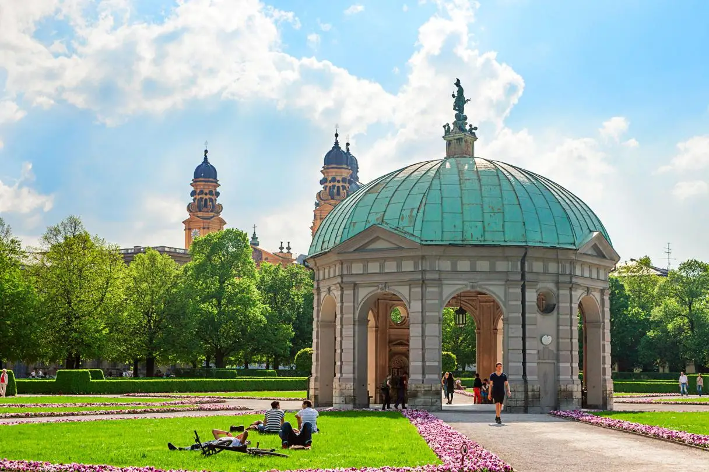

Munich Introduction

Attractions: 12
Accessibility: 12 out of 12 are wheelchair accessible. All are assisted walking/stroller friendly.
Distance: 2.5 km
Old Town

Attractions: 10
Accessibility: 9 out of 10 are wheelchair accessible. All are assisted walking/stroller friendly.
Distance: 2.7 km
Art District Museums & Galleries

Attractions: 10
Accessibility: 9 out of 10 are wheelchair accessible. All are assisted walking/stroller friendly.
Distance: 2.7 km
Palaces

Attractions: 6
Accessibility: 5 out of 6 are wheelchair accessible. All are assisted walking/stroller friendly. Attractions viewable from the outside only.
Distance: 1.7 km
Top Religious Sites

Attractions: 10
Accessibility: 9 out of 10 are wheelchair accessible. All are assisted walking/stroller friendly.
Distance: 2.7 km
Third Reich

Attractions: 6
Accessibility: 6 out of 6 are wheelchair accessible. All are assisted walking/stroller friendly. All but 2 attraction view from the outside only.
Distance: 3.3 km